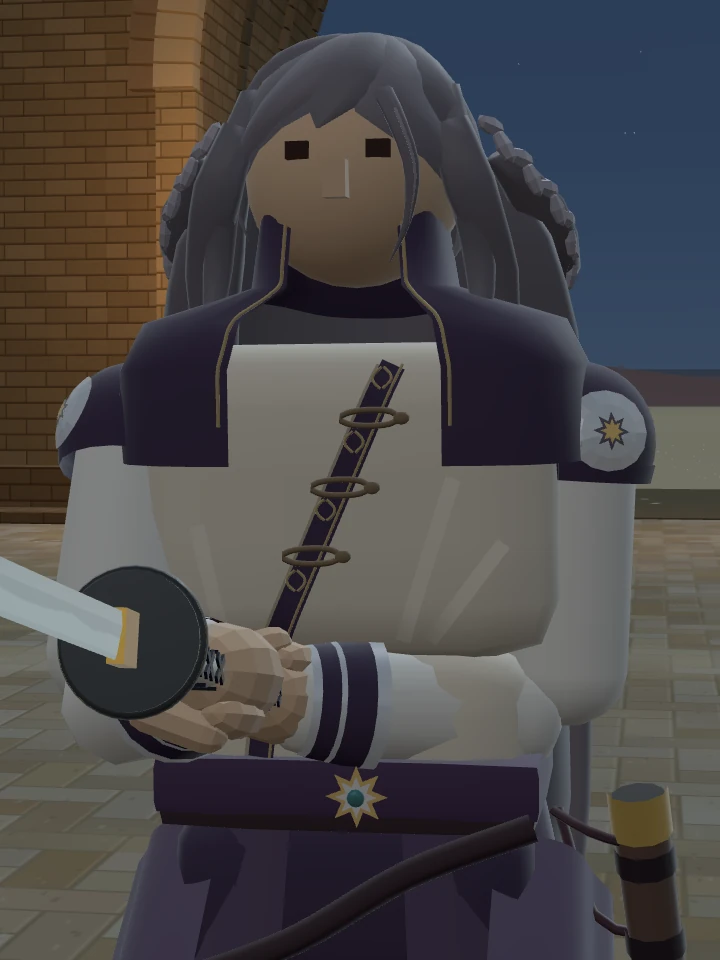
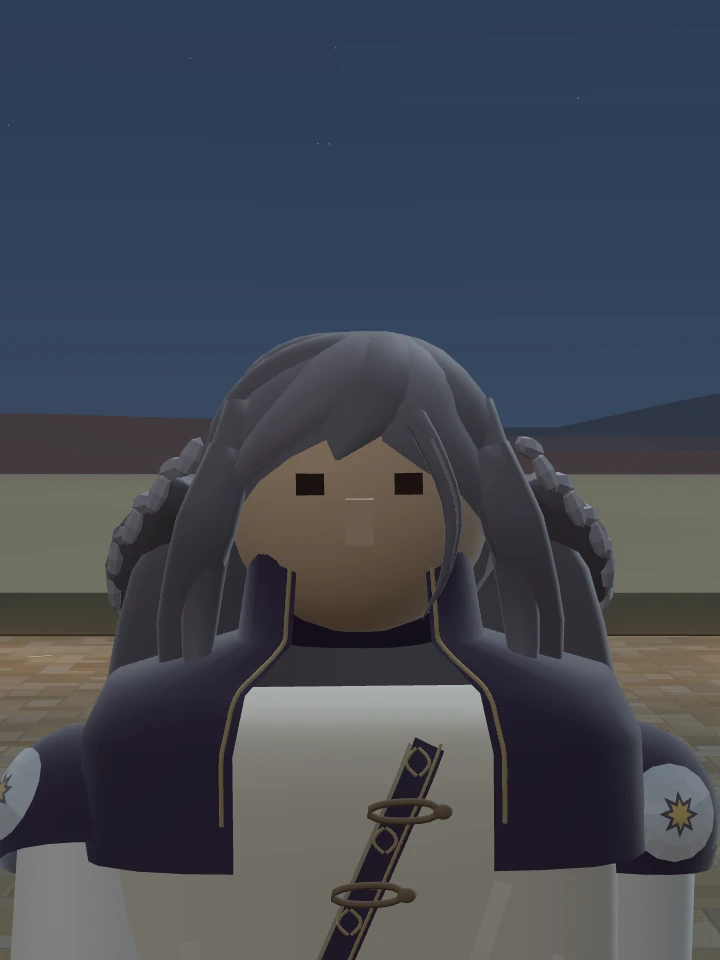
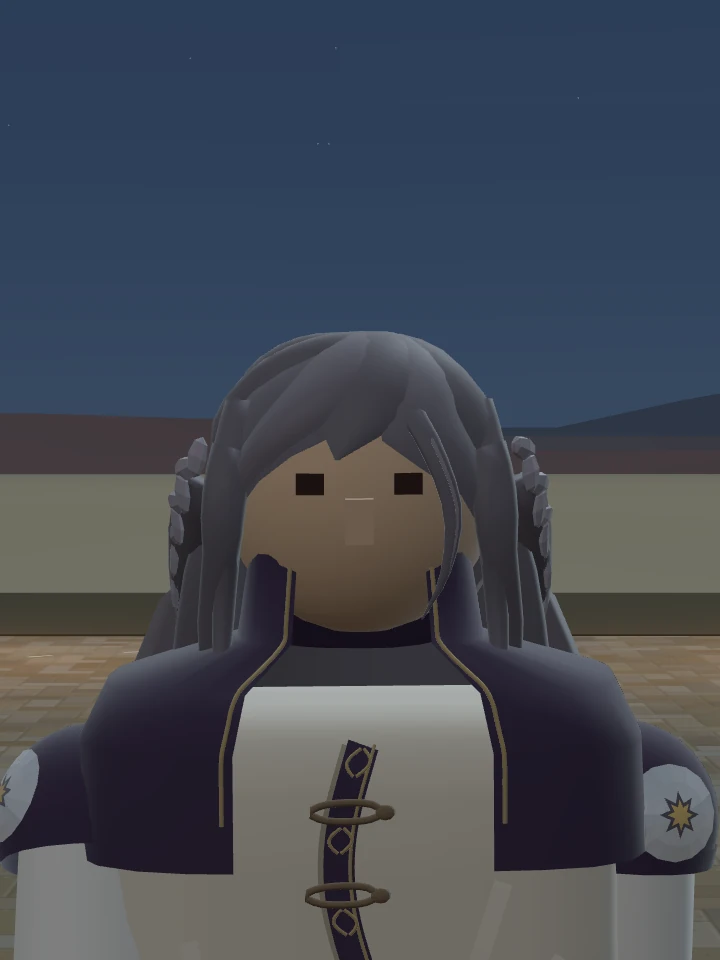

STILLNESS · 적막
다라이시
아지랑이처럼 흐르는 앞섶, 가벼워진 옆머리.
기본 외형의 후속 시안입니다.
수직으로 흐르는 곡선
대각선 앞섶을 중앙을 따라 내려오는 완만한 S곡선으로 바꿨습니다. 여밈 세 개와 금실 잎무늬도 곡선을 따라갑니다.



형태를 지키며 가늘게
옆으로 부풀던 머리의 폭을 줄였습니다. 땋은 형태와 길이는 살리고, 마음에 드셨던 앞머리 한 가닥은 그대로 두었습니다.




위 비교 사진은 같은 카메라·조명·축척으로 촬영했습니다.